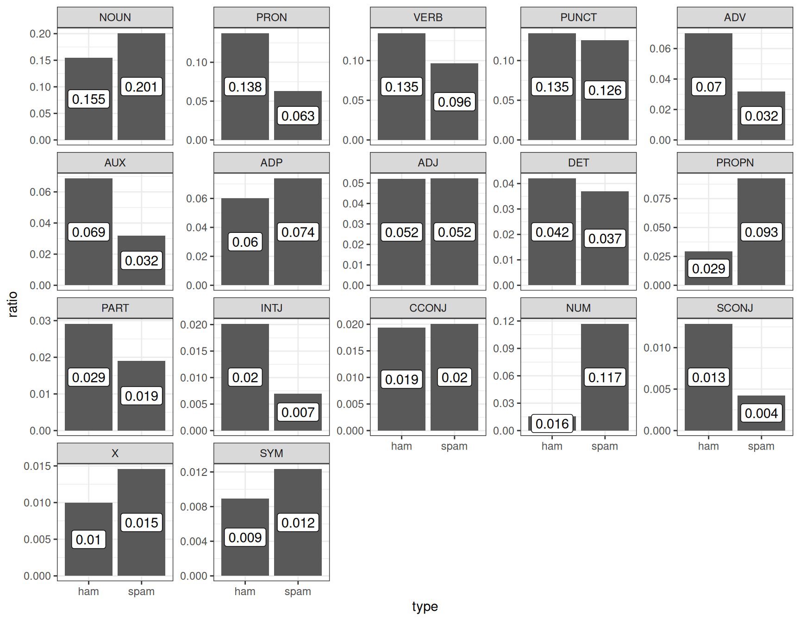
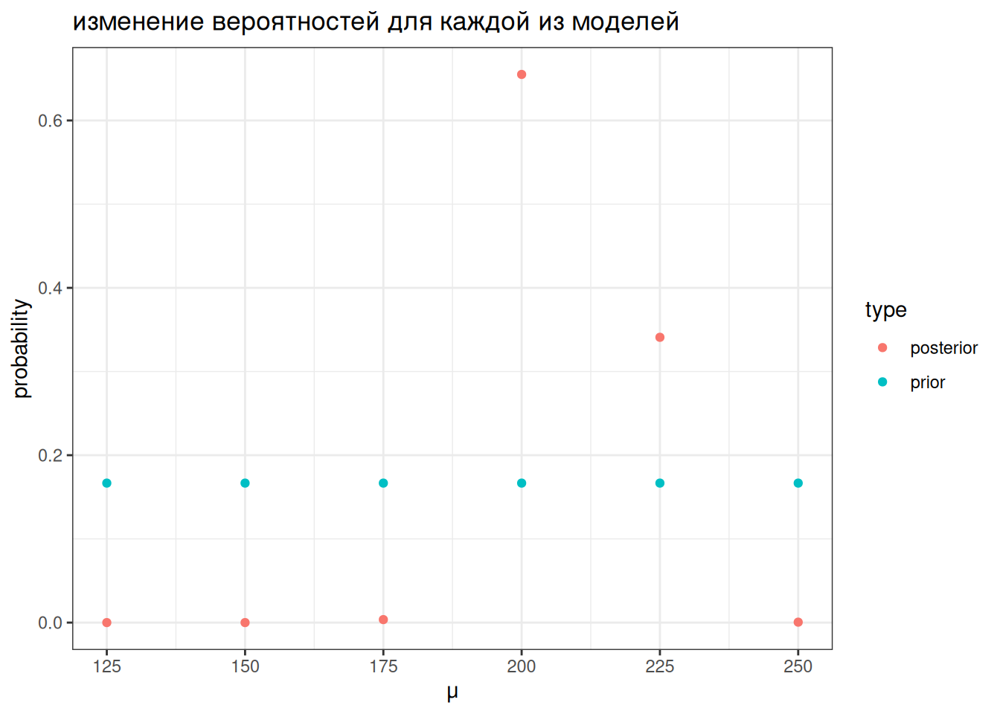

Для примера я взял датасет, который содержит спамерские и обычные смс-сообщения, выложенный UCI Machine Learning на kaggle и при помощи пакета udpipe токенизировал и определил часть речи:
sms_pos |>group_by(type) |>mutate(ratio = n/sum(n),upos =fct_reorder(upos, n, mean, .desc =TRUE)) |>ggplot(aes(type, ratio))+geom_col()+geom_label(aes(label =round(ratio, 3)), position =position_stack(vjust =0.5))+facet_wrap(~upos, scales ="free_y")

Давайте полученные доли считать нашей моделью: сумма всех чисел внутри каждого типа (ham/spam) дает в сумме 1. Мы получили новое сообщение:
Call FREEPHONE 0800 542 0825 now!
Модель udpipe разобрала его следующим образом:
VERB NUM NUM NUM NUM ADV PUNCT
Понятно, что это – спам, но мы попытаемся применить байесовский статистический вывод, чтобы определить тип сообщения. Предположим, что машина считает обе гипотезы равновероятными, т. е. ее априорное распределение гипотез равно 0.5 каждая. На минуту представим, что машина анализирует текст пословно. Первое слово типа VERB. Функции правдоподобия равны 0.135 и 0.096 для сообщений типа ham и spam соответственно. Применим байесовский апдейт:
Вот мы и сделали байесовский апдейт. Теперь апостериорное распределение, которое мы получили на предыдущем шаге, мы можем использовать в новом апдейте. Следующее слово в сообщении типа NUM.
На основе первых трех слов посчитайте посчитайте вероятность гипотезы, что перед нами спамерское сообщение, если предположить, что каждое пятое сообщение – спам. Ответ округлите до трех знаков после запятой.
Из формулы Байеса следует, что не обязательно каждый раз делить на нормализующий делитель, это можно сделать единожды.
Из приведенных рассуждений также следует, что все равно в каком порядке мы производим байесовский апдейт: мы могли сначала умножить на значение правдоподобия для категории NUM и лишь в конце на значение правдоподобия VERB.
Также стоит отметить, что если данных много, то через какое-то время становится все равно, какое у нас было априорное распределение. Даже в нашем примере, в котором мы проанализировали первые три слова сообщения, модель, прогнозирующая, что сообщение спамерское, выиграет, даже если, согласно априорному распределению, спамерским является каждое 20 сообщение:
Самым главным отличием байесовского статистического вывода от фриквентистского, является то, что мы в результате получаем вероятность каждой из моделей. Это очень значительно отличается от фриквентистской практики нулевых гипотез и p-value, в соответствии с которыми мы можем лишь отвергнуть или не отвергнуть нулевую гипотезу.
Вашего друга похитили а на почту отправили датасет, в котором записаны данные о погоде из пяти городов. Ваш телефон зазвонил, и друг сказал, что не знает куда его похитили, но за окном легкий дождь (Rain). А в какой-то из следующих дней — сильный дождь (Rain, Thunderstorm). Исходя из явно неверного предположения, что погодные условия каждый день не зависят друг от друга, сделайте байесовский апдейт и предположите, в какой город вероятнее всего похитили друга.
Укажите получившуюся вероятность. Выполняя задание, округлите все вероятности и значения правдоподобия до 3 знаков после запятой.
4.3 Разница между фриквентиским и байесовским подходами
Немного упрощая данные из статьи (Rosenbach 2003: 394), можно сказать что носители британского английского предпочитают s-генитив (90%) of-генитиву (10%). Проведите байесовский апдейт, если Вы наблюдаете в интервью британского актера из 120 контекстов 92 s-генитивов. Априорное распределение берите соразмерное данным. Ответ округлите до трёх или менее знаков после запятой.
Параметр альфа:
Параметр бета:
4.4.4 Байесовский апдейт биномиальных данных: несколько моделей
Начнем с апостериорных параметров для наблюдений \(x_1, ... x_n\) со средним \(\mu_{data}\) известной дисперсией \(\sigma_{known}^2\)
4.5.1 Байесовский апдейт нормального распределения: выбор из нескольких моделей
Мы можем рассматривать эту задачу как выбор между несколькими моделями с разными средними:
tibble(x =rep(1:400, 6),density =c(dnorm(unique(x), mean =125, sd =70),dnorm(unique(x), mean =150, sd =70),dnorm(unique(x), mean =175, sd =70),dnorm(unique(x), mean =200, sd =70),dnorm(unique(x), mean =225, sd =70),dnorm(unique(x), mean =250, sd =70)),dataset =rep(1:6, each =400)) |>ggplot(aes(x, density, color =factor(dataset)))+geom_line()
Дальше мы можем точно так же апдейтить, как мы делали раньше:
tibble(mu =seq(125, 250, by =25),prior =1/6,likelihood =c(prod(dnorm(chicks$weight, mean =125, sd =70)),prod(dnorm(chicks$weight, mean =150, sd =70)),prod(dnorm(chicks$weight, mean =175, sd =70)),prod(dnorm(chicks$weight, mean =200, sd =70)),prod(dnorm(chicks$weight, mean =225, sd =70)),prod(dnorm(chicks$weight, mean =250, sd =70))),product = prior*likelihood,posterior = product/sum(product)) -> resultsresults
results |>select(mu, prior, posterior) |>pivot_longer(names_to ="type", values_to ="probability", prior:posterior) |>ggplot(aes(mu, probability, color = type))+geom_point()+labs(title ="изменение вероятностей для каждой из моделей",x ="μ")

4.5.2 Байесовский апдейт нормального распределения: непрерывный вариант
Во первых, нам понадобится некоторая мера, которая называется точность (precision):
Так что если нашим априорным распределением мы назовем нормальное распределение со средним около 180 и стандартным отклонением 90, то процесс байесовского апдейта будет выглядеть вот так:
В работе (Coretta 2016) собраны данные длительности исландских гласных. Отфильтруйте данные, произнесенные носителем tt01 (переменная speaker), произведите байесовский апдейт данных, моделируя длительность гласных (переменная vowel.dur) нормальным распределением и постройте график. В качестве априорного распределения используйте нормальное распределение со средним 87 и стандартным отклонением 25.
раздел 2.5 в Gelman A. et. al (2014) Bayesian Data Analysis
4.6 Другие распределения
Мы обсудили биномиальные и нормальное распределенные данные. Так случилось, что для них есть короткий путь сделать байесовский апдейт, не применяя формулы Байеса. И нам так повезло, что связки априорного/апосториорного распределений и функции правдоподобия такие простые:
априорного/апосториорного распределены как бета распределение, значит функция правдоподобия – биномиальное распределение
если мы моделируем данные при помощи нормального распределения, то все три распределения (априорное, функция правдопдобия и апосториорное) – нормальные.
Такие отношения между распределениями называют сопряженными (conjugate). В результате для разных семейств функции правдоподобия существует список соответствующих сопряженных априорных распределений (conjugate prior), который можно найти, например, здесь.
В большинстве случаев используется (а на самом деле почти всегда) Марковские цепи Монте-Карло (MCMC).
4.7 Вопросы к апостериорному распределению
A frequentist uses impeccable logic to answer the wrong question, while a Bayesian answers the right question by making assumptions that nobody can fully believe in. (P. G. Hammer)
попытка оценить параметр θ и/или какой-нибудь интервал, в котором он лежит.
среднее апостериорного распределения (mean of the posterior estimation, MAP)
максимум апостериорного распределения (maximum a posteriori estimation, MAP)
байесовский доверительный интервал
ответить на вопросы вроде
какова вероятность, что значение θ больше некоторого значения \(x\)?
какова вероятность, что значение θ лежит в интервале \([x; y]\)?
и т. п.
Выборки из апостериорного распределения (Posterior simulation):
симулируйте большую выборку из апостериорного распределения;
используйте полученную выборку для статистического вывода.
Допустим, мы получили апостериорное бета распределение с параметрами 20 и 70. Какова вероятность наблюдать значения больше 0.3?
Coretta, Stefano. 2016. “Vowel Duration and Aspiration Effects in Icelandic.” University of York.
Efron, Bradley, and Trevor Hastie. 2016. Computer Age Statistical Inference. Vol. 5. Cambridge University Press.
Robinson, D. 2017. Introduction to Empirical Bayes: Examples from Baseball Statistics. ASIN: B06WP26J8Q.
Rosenbach, Anette. 2003. “Aspects of Iconicity and Economy in the Choice Between the s-Genitive and the of-Genitive in English.” In Determinants of Grammatical Variation in English, edited by Günter Rohdenburg and Britta Mondorf. Berlin, New York: Mouton de Gruyter.